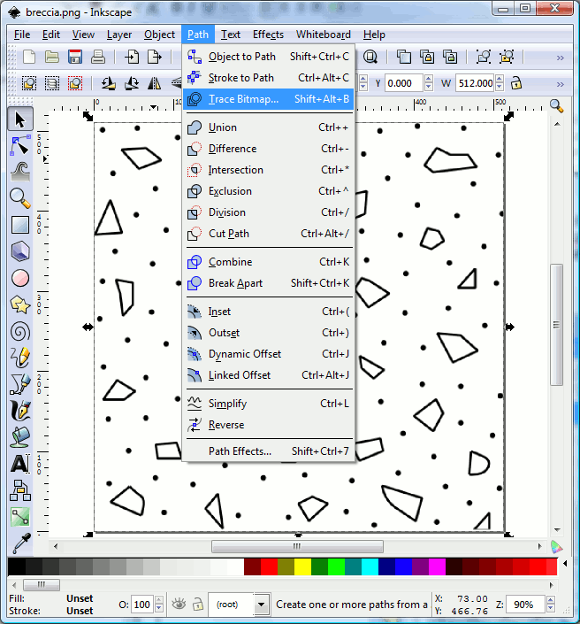
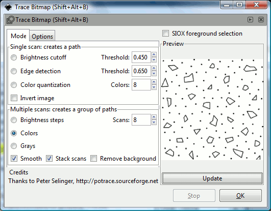

How
to create new lithologies/symbols
SedLog allows the user to
import new
lithologies and symbols in SVG/SVGZ format
(see Add
new litholgies/symbols to SedLog).
SVG
(Scalable Vector Graphics) is an XML specification and file format for
describing two-dimensional vector graphics, both static and animated.
It is an open standard created by the World Wide Web Consortium's SVG
Working Group. SVGZ are compessed SVG files.
You can
create your own SVG/SVGZ files by using a vector graphics software such
as Inkscape, CorelDraw, Adobe Illustrator, Adobe Photoshop etc. Inkscape
is a free and open source
vector graphics editor application. Its stated goal is to become a
powerful graphic tool while being fully compliant with the XML, SVG and
CSS standards. Inkscape
is
primarily developed for Linux, but it is cross-platform and runs on Mac
OS X (under X11), other Unix-like operating systems, and Microsoft
Windows. Inkscape has
multi-lingual support, particularly for complex scripts, something
currently lacking in most commercial vector graphics applications. You
can download Inkscape
from: www.inkscape.org.
SVG/SVGZ format is a vector graphics image format as opposed to a
raster graphics image. Computers can store images either: a) as a
raster graphics image or bitmap, or b) as a vector graphics image.
Bitmaps are matrices of pixels and appear jagged when rescaled or
printed. Vector graphics use geometrical primitives such as points,
lines, curves, and polygons to represent images and continue to look
the same when rescaled or printed. Examples of raster graphics image or
bitmap file formats are: JPEG, GIF, BMP and
PNG. Examples of vector
graphics image
formats are:
SVG/SVGZ, PDF, EPS/PS, AI(Adobe
Illustrator) and CorelDraw.
You can use also Inkscape to
convert patterns or symbols saved in other formats such as AI, PDF,
JPEG, GIF, BMP, PNG, etc to SVG or SVGZ. If the file you want to
convert is a bitmap (raster image) then first you have to use Inkscape
to converted it to vector format before you save it as SVG. To do this
first open the bitmap using Inkscape. Then select the
loaded bitmap by clicking the Select
All option from the Edit
menu.
From the Path
menu select Trace
Bitmap (see figure 1 below).
A
dialog box with various options will appear (see figure 2 below).
Select the Colors
option (if
you not select this option the resulting image will be black and white)
and press OK.
The vector
version of the image will be created on top of the original
bitmap
image. Select the vector version and move it a little to reveal the
original (bitmap). Select the bitmap and remove it. Save the image as
SVG. You may need to play around with various options until
you
get it right.

Figure
1.

Figure
2.
NOTE:
Make sure that the
bitmap you provide is not to small. The
bigger the bitmap the better the results of the tracing will be. To
rescale or modify a bitmap you can use GIMP
(GNU Image Manipulation Program) a free cross-platform software for editing and
creating raster images.
You can download GIMP from: www.gimp.org
For more information how to use Inkscape please consult the Inkscape
manual.
See
Also
Add
new litholgies/symbols to SedLog